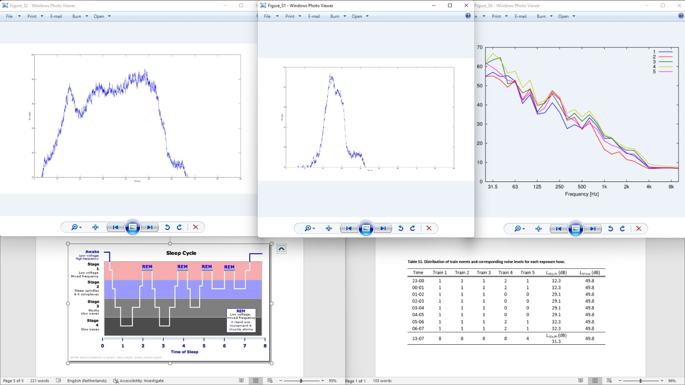

Living next to a railroad
How does it affect the sleep cycle?
An average sleep cycle lasts about 90 minutes. Ideally, you need four to six cycles of sleep every 24 hours to feel fresh and rested. Each cycle contains four individual stages: three that form non-rapid eye movement (NREM) sleep and one rapid eye movement (REM) sleep.
The graphs shows the frequentie of the vibrations. These trains are passing by every hour. Meaning that the vibrations disturb the sleep cycle of a person living next to railroad.
